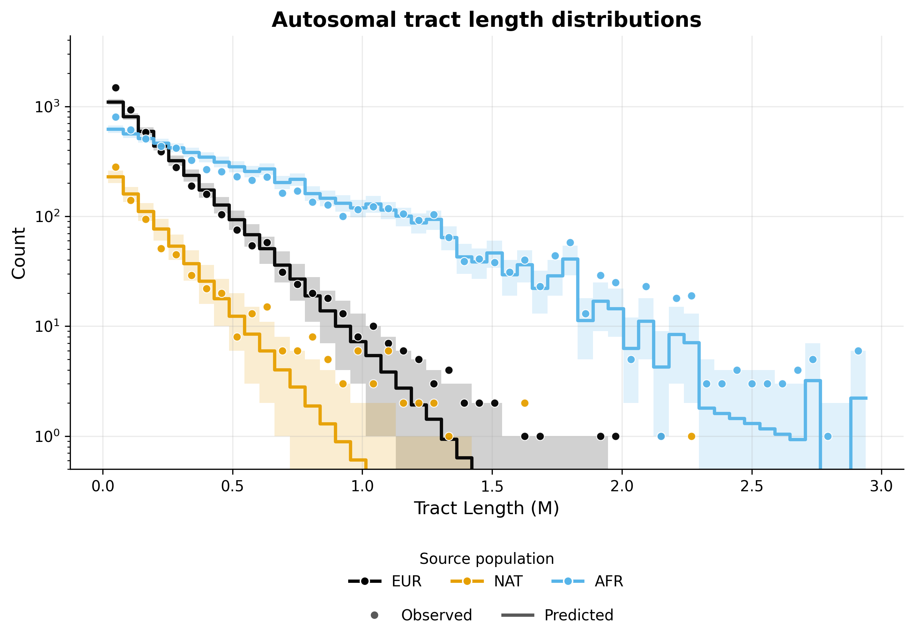
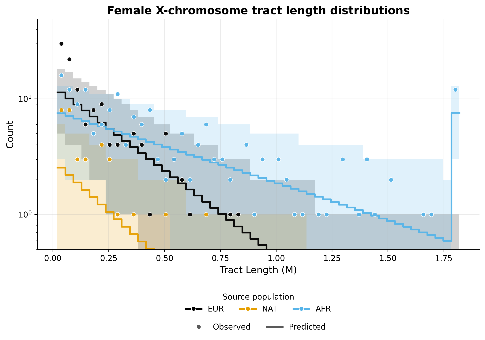
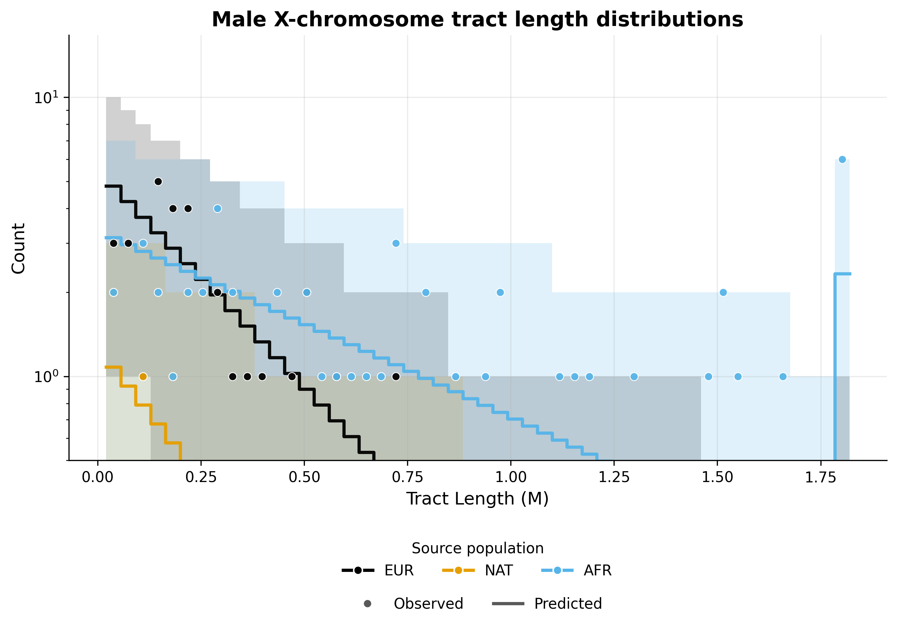

Note
Go to the end to download the full example code.
ASW inference - One pulse model#
This example implements inference for the ASW population under a one pulse model of admixture, using the tracts package. Inference is performed using autosomal and X chromosome data, allowing for the specification of sex-biased admixture.
To implement this example, we use the following driver file:
samples:
directory: ./TrioPhased/
individual_names: [
"NA19625","NA19700","NA19701","NA19703","NA19704","NA19707","NA19711","NA19712","NA19713","NA19818","NA19819",
"NA19834","NA19835","NA19900","NA19901","NA19904","NA19908","NA19909","NA19913","NA19914","NA19916","NA19917",
"NA19920","NA19921","NA19922","NA19923","NA19982","NA19984","NA20126","NA20127","NA20274","NA20276","NA20278",
"NA20281","NA20282","NA20287","NA20289","NA20291","NA20294","NA20296","NA20298","NA20299","NA20314","NA20317",
"NA20318","NA20320","NA20321","NA20332","NA20334","NA20339","NA20340","NA20342","NA20346","NA20348","NA20351",
"NA20355","NA20356","NA20357","NA20359","NA20362","NA20412"]
male_names : [
"NA19700","NA19703","NA19711","NA19818","NA19834","NA19900","NA19904","NA19908","NA19916","NA19920",
"NA19922","NA19982","NA19984","NA20126","NA20278","NA20281","NA20291","NA20298","NA20318","NA20340",
"NA20342","NA20346","NA20348","NA20351","NA20356","NA20362"] #see Readme_dataprocessing.md for how this was generated
filename_format: "{name}_{label}_final.bed"
labels: [A, B] #If this field is omitted, 'A' and 'B' will be used by default
chromosomes: 1-22 #The chromosomes to use for analysis. Can be specified as a list or a range
allosomes: [X]
output_filename_format: "ASW_test_output_{label}"
log_filename: 'ASW_one_pulse.log'
output_directory: ./output_one_pulse/
verbose_log: 1
verbose_screen: 30
log_scale : True
start_params:
t: 5:8
repetitions: 3
maximum_iterations: 1000
seed: 100
unknown_labels_for_smoothing: ["UNK", "centromere","miscall"] # segments with these labels will be smoother over, that is, will be filled with neighbouring ancestries up to their midpoints.
exclude_tracts_below_cm: 2
npts : 50
#fix_parameters_from_ancestry_proportions: ['REUR', 'RNAT', 'REUR_sex_bias', 'RNAT_sex_bias']
output_directory: ./output_one_pulse/
ad_model_autosomes : M
ad_model_allosomes: DC
Complete results from this analysis are saved in the output directory specified in the driver file. Below, we display the optimal parameters estimated from this analysis, as well as the plots illustrating the inferred tract length distributions, compared to the observed histograms, for every source population and chromosome type (autosomes and X chromosome).
Optimal parameters#
parameter |
value |
|---|---|
REUR |
0.19584948473857225 |
REUR_sex_bias |
0.77661489258918 |
RNAT |
0.03063617939367127 |
RNAT_sex_bias |
0.7803119475562776 |
t |
6.851417692065853 |
Tract length histograms#
Autosomal admixture#
{kind=link}

X chromosome admixture in females#
{kind=link}

X chromosome admixture in males#
{kind=link}

------------------------------------------------------------------------------------------------
Running tracts 2.0 with driver file: ASW_one_pulse.yaml
Reading data, demographic model and driver specifications...
------------------------------------------------------------------------------------------------
excluding_tracts_below set to 2.0 cM.
Ancestries: ['EUR', 'NAT', 'AFR']
Data autosome proportions: [0.19578862 0.03825495 0.76595643]
Data allosome proportions: [0.16839124 0.03818939 0.79341937]
Model parameters : ['REUR', 'REUR_sex_bias', 'RNAT', 'RNAT_sex_bias', 't']
Multiple starting parameters were generated. These will be converted to optimizer units and used for multiple optimization runs.
Run | Starting parameters
---------------------------------------------------
1 | [0.8, 0.1, 0.1, 0.1, 6.051 ]
2 | [0.8, 0.1, 0.1, 0.1, 7.828 ]
3 | [0.8, 0.1, 0.1, 0.1, 7.308 ]
---------------------------------------------------
Optimization run #1
-----------------------------------------------------------------------------------------
Admixture is modelled with the M model for autosomes and with the DC model for allosomes.
Optimization is performed in two steps.
Step 1 : Optimizing autosomal likelihood over parameters ['REUR', 'RNAT', 't'].
Iter. Log-likelihood Model parameters Transmission
-----------------------------------------------------------------------------------------
30 , -8783.43 , array([ 0.766851 , 0 , 0.0915407 , 0 , 5.38536 ]), Autosomes
60 , -6689.12 , array([ 0.716438 , 0 , 0.0834419 , 0 , 5.01123 ]), Autosomes
90 , -5048.93 , array([ 0.659646 , 0 , 0.0768037 , 0 , 4.64467 ]), Autosomes
120 , -3845.94 , array([ 0.593199 , 0 , 0.0717713 , 0 , 4.59802 ]), Autosomes
150 , -2917.74 , array([ 0.524202 , 0 , 0.0666869 , 0 , 4.6503 ]), Autosomes
180 , -2192.79 , array([ 0.454208 , 0 , 0.0619787 , 0 , 4.69761 ]), Autosomes
210 , -1622.15 , array([ 0.384954 , 0 , 0.058127 , 0 , 4.92339 ]), Autosomes
240 , -1177.56 , array([ 0.32578 , 0 , 0.0535765 , 0 , 5.36143 ]), Autosomes
270 , -861.203 , array([ 0.269123 , 0 , 0.0491301 , 0 , 5.75128 ]), Autosomes
300 , -678.289 , array([ 0.226608 , 0 , 0.0434688 , 0 , 6.31088 ]), Autosomes
330 , -599.738 , array([ 0.197439 , 0 , 0.0362033 , 0 , 6.71031 ]), Autosomes
360 , -590.05 , array([ 0.196257 , 0 , 0.032662 , 0 , 6.8269 ]), Autosomes
390 , -588.763 , array([ 0.195852 , 0 , 0.0313911 , 0 , 6.85613 ]), Autosomes
420 , -588.548 , array([ 0.195954 , 0 , 0.0310744 , 0 , 6.84569 ]), Autosomes
450 , -588.48 , array([ 0.195925 , 0 , 0.0308196 , 0 , 6.84602 ]), Autosomes
480 , -588.466 , array([ 0.195888 , 0 , 0.0307111 , 0 , 6.84943 ]), Autosomes
Step 1 completed.
----------------------------------------------------------------------------------------------------------
Step 2 : Optimizing autosomal + allosomal likelihood over parameters : ['REUR_sex_bias', 'RNAT_sex_bias'].
Non-sex-bias parameters fixed at values from previous optimization step.
Iter. Log-likelihood Model parameters Transmission
----------------------------------------------------------------------------------------------------------
510 , -210.568 , array([ 0.195846 , 0.0392888 , 0.0306803 , 0.0245961 , 6.84912 ]), Female allosomes
510 , -95.8795 , array([ 0.195846 , 0.0392888 , 0.0306803 , 0.0245961 , 6.84912 ]), Male allosomes
510 , -588.464 , array([ 0.195846 , 0.0392888 , 0.0306803 , 0.0245961 , 6.84912 ]), Autosomes
540 , -208.046 , array([ 0.195846 , 0.169352 , 0.0306803 , 0.0935103 , 6.84912 ]), Female allosomes
540 , -96.4478 , array([ 0.195846 , 0.169352 , 0.0306803 , 0.0935103 , 6.84912 ]), Male allosomes
540 , -588.464 , array([ 0.195846 , 0.169352 , 0.0306803 , 0.0935103 , 6.84912 ]), Autosomes
570 , -205.779 , array([ 0.195846 , 0.293332 , 0.0306803 , 0.164404 , 6.84912 ]), Female allosomes
570 , -97.081 , array([ 0.195846 , 0.293332 , 0.0306803 , 0.164404 , 6.84912 ]), Male allosomes
570 , -588.464 , array([ 0.195846 , 0.293332 , 0.0306803 , 0.164404 , 6.84912 ]), Autosomes
600 , -203.819 , array([ 0.195846 , 0.403457 , 0.0306803 , 0.242452 , 6.84912 ]), Female allosomes
600 , -97.7335 , array([ 0.195846 , 0.403457 , 0.0306803 , 0.242452 , 6.84912 ]), Male allosomes
600 , -588.464 , array([ 0.195846 , 0.403457 , 0.0306803 , 0.242452 , 6.84912 ]), Autosomes
630 , -202.161 , array([ 0.195846 , 0.497282 , 0.0306803 , 0.327043 , 6.84912 ]), Female allosomes
630 , -98.3684 , array([ 0.195846 , 0.497282 , 0.0306803 , 0.327043 , 6.84912 ]), Male allosomes
630 , -588.464 , array([ 0.195846 , 0.497282 , 0.0306803 , 0.327043 , 6.84912 ]), Autosomes
660 , -200.782 , array([ 0.195846 , 0.574544 , 0.0306803 , 0.415678 , 6.84912 ]), Female allosomes
660 , -98.9579 , array([ 0.195846 , 0.574544 , 0.0306803 , 0.415678 , 6.84912 ]), Male allosomes
660 , -588.464 , array([ 0.195846 , 0.574544 , 0.0306803 , 0.415678 , 6.84912 ]), Autosomes
690 , -199.648 , array([ 0.195846 , 0.63672 , 0.0306803 , 0.504418 , 6.84912 ]), Female allosomes
690 , -99.4863 , array([ 0.195846 , 0.63672 , 0.0306803 , 0.504418 , 6.84912 ]), Male allosomes
690 , -588.464 , array([ 0.195846 , 0.63672 , 0.0306803 , 0.504418 , 6.84912 ]), Autosomes
720 , -198.725 , array([ 0.195846 , 0.68615 , 0.0306803 , 0.589058 , 6.84912 ]), Female allosomes
720 , -99.9474 , array([ 0.195846 , 0.68615 , 0.0306803 , 0.589058 , 6.84912 ]), Male allosomes
720 , -588.464 , array([ 0.195846 , 0.68615 , 0.0306803 , 0.589058 , 6.84912 ]), Autosomes
750 , -197.981 , array([ 0.195846 , 0.72524 , 0.0306803 , 0.666226 , 6.84912 ]), Female allosomes
750 , -100.341 , array([ 0.195846 , 0.72524 , 0.0306803 , 0.666226 , 6.84912 ]), Male allosomes
750 , -588.464 , array([ 0.195846 , 0.72524 , 0.0306803 , 0.666226 , 6.84912 ]), Autosomes
780 , -197.389 , array([ 0.195846 , 0.756019 , 0.0306803 , 0.733874 , 6.84912 ]), Female allosomes
780 , -100.672 , array([ 0.195846 , 0.756019 , 0.0306803 , 0.733874 , 6.84912 ]), Male allosomes
780 , -588.464 , array([ 0.195846 , 0.756019 , 0.0306803 , 0.733874 , 6.84912 ]), Autosomes
810 , -196.99 , array([ 0.195846 , 0.776488 , 0.0306803 , 0.782897 , 6.84912 ]), Female allosomes
810 , -100.902 , array([ 0.195846 , 0.776488 , 0.0306803 , 0.782897 , 6.84912 ]), Male allosomes
810 , -588.464 , array([ 0.195846 , 0.776488 , 0.0306803 , 0.782897 , 6.84912 ]), Autosomes
Step 2 completed.
----------------------------------------------------------------------------------------------------------
Optimization run #2
-----------------------------------------------------------------------------------------
Admixture is modelled with the M model for autosomes and with the DC model for allosomes.
Optimization is performed in two steps.
Step 1 : Optimizing autosomal likelihood over parameters ['REUR', 'RNAT', 't'].
Iter. Log-likelihood Model parameters Transmission
-----------------------------------------------------------------------------------------
30 , -10412.7 , array([ 0.775115 , 0 , 0.0926123 , 0 , 6.59048 ]), Autosomes
60 , -7616.56 , array([ 0.7386 , 0 , 0.0850206 , 0 , 5.52232 ]), Autosomes
90 , -5795.54 , array([ 0.686362 , 0 , 0.0779571 , 0 , 5.01961 ]), Autosomes
120 , -4389.2 , array([ 0.62694 , 0 , 0.0730759 , 0 , 4.6187 ]), Autosomes
150 , -3332.96 , array([ 0.557988 , 0 , 0.0684608 , 0 , 4.59829 ]), Autosomes
180 , -2505.49 , array([ 0.486429 , 0 , 0.0643787 , 0 , 4.70019 ]), Autosomes
210 , -1867.78 , array([ 0.4166 , 0 , 0.0603655 , 0 , 4.8819 ]), Autosomes
240 , -1409.54 , array([ 0.354496 , 0 , 0.0563356 , 0 , 5.02225 ]), Autosomes
270 , -1038.87 , array([ 0.302732 , 0 , 0.0522424 , 0 , 5.50553 ]), Autosomes
300 , -789.63 , array([ 0.252882 , 0 , 0.0471329 , 0 , 5.87739 ]), Autosomes
330 , -649.114 , array([ 0.220065 , 0 , 0.041178 , 0 , 6.43723 ]), Autosomes
360 , -594.211 , array([ 0.197269 , 0 , 0.0345642 , 0 , 6.79984 ]), Autosomes
390 , -589.814 , array([ 0.195126 , 0 , 0.0324256 , 0 , 6.81289 ]), Autosomes
420 , -588.91 , array([ 0.195836 , 0 , 0.0316839 , 0 , 6.84239 ]), Autosomes
450 , -588.531 , array([ 0.196004 , 0 , 0.0310264 , 0 , 6.84187 ]), Autosomes
480 , -588.475 , array([ 0.19595 , 0 , 0.0307788 , 0 , 6.85001 ]), Autosomes
510 , -588.464 , array([ 0.195898 , 0 , 0.030681 , 0 , 6.84984 ]), Autosomes
Step 1 completed.
----------------------------------------------------------------------------------------------------------
Step 2 : Optimizing autosomal + allosomal likelihood over parameters : ['REUR_sex_bias', 'RNAT_sex_bias'].
Non-sex-bias parameters fixed at values from previous optimization step.
Iter. Log-likelihood Model parameters Transmission
----------------------------------------------------------------------------------------------------------
540 , -210.891 , array([ 0.195857 , 0.0231546 , 0.0306393 , 0.0133796 , 6.851 ]), Female allosomes
540 , -95.8109 , array([ 0.195857 , 0.0231546 , 0.0306393 , 0.0133796 , 6.851 ]), Male allosomes
540 , -588.462 , array([ 0.195857 , 0.0231546 , 0.0306393 , 0.0133796 , 6.851 ]), Autosomes
570 , -208.334 , array([ 0.195857 , 0.155121 , 0.0306393 , 0.0799096 , 6.851 ]), Female allosomes
570 , -96.373 , array([ 0.195857 , 0.155121 , 0.0306393 , 0.0799096 , 6.851 ]), Male allosomes
570 , -588.462 , array([ 0.195857 , 0.155121 , 0.0306393 , 0.0799096 , 6.851 ]), Autosomes
600 , -206.032 , array([ 0.195857 , 0.280212 , 0.0306393 , 0.150485 , 6.851 ]), Female allosomes
600 , -97.0017 , array([ 0.195857 , 0.280212 , 0.0306393 , 0.150485 , 6.851 ]), Male allosomes
600 , -588.462 , array([ 0.195857 , 0.280212 , 0.0306393 , 0.150485 , 6.851 ]), Autosomes
630 , -204.034 , array([ 0.195857 , 0.391854 , 0.0306393 , 0.228229 , 6.851 ]), Female allosomes
630 , -97.6539 , array([ 0.195857 , 0.391854 , 0.0306393 , 0.228229 , 6.851 ]), Male allosomes
630 , -588.462 , array([ 0.195857 , 0.391854 , 0.0306393 , 0.228229 , 6.851 ]), Autosomes
660 , -202.341 , array([ 0.195857 , 0.487356 , 0.0306393 , 0.312745 , 6.851 ]), Female allosomes
660 , -98.2921 , array([ 0.195857 , 0.487356 , 0.0306393 , 0.312745 , 6.851 ]), Male allosomes
660 , -588.462 , array([ 0.195857 , 0.487356 , 0.0306393 , 0.312745 , 6.851 ]), Autosomes
690 , -200.928 , array([ 0.195857 , 0.566247 , 0.0306393 , 0.401703 , 6.851 ]), Female allosomes
690 , -98.8877 , array([ 0.195857 , 0.566247 , 0.0306393 , 0.401703 , 6.851 ]), Male allosomes
690 , -588.462 , array([ 0.195857 , 0.566247 , 0.0306393 , 0.401703 , 6.851 ]), Autosomes
720 , -199.765 , array([ 0.195857 , 0.629866 , 0.0306393 , 0.491234 , 6.851 ]), Female allosomes
720 , -99.4235 , array([ 0.195857 , 0.629866 , 0.0306393 , 0.491234 , 6.851 ]), Male allosomes
720 , -588.462 , array([ 0.195857 , 0.629866 , 0.0306393 , 0.491234 , 6.851 ]), Autosomes
750 , -198.817 , array([ 0.195857 , 0.680508 , 0.0306393 , 0.577075 , 6.851 ]), Female allosomes
750 , -99.8924 , array([ 0.195857 , 0.680508 , 0.0306393 , 0.577075 , 6.851 ]), Male allosomes
750 , -588.462 , array([ 0.195857 , 0.680508 , 0.0306393 , 0.577075 , 6.851 ]), Autosomes
780 , -198.051 , array([ 0.195857 , 0.720597 , 0.0306393 , 0.655707 , 6.851 ]), Female allosomes
780 , -100.294 , array([ 0.195857 , 0.720597 , 0.0306393 , 0.655707 , 6.851 ]), Male allosomes
780 , -588.462 , array([ 0.195857 , 0.720597 , 0.0306393 , 0.655707 , 6.851 ]), Autosomes
810 , -197.44 , array([ 0.195857 , 0.752202 , 0.0306393 , 0.724922 , 6.851 ]), Female allosomes
810 , -100.632 , array([ 0.195857 , 0.752202 , 0.0306393 , 0.724922 , 6.851 ]), Male allosomes
810 , -588.462 , array([ 0.195857 , 0.752202 , 0.0306393 , 0.724922 , 6.851 ]), Autosomes
840 , -196.981 , array([ 0.195857 , 0.776391 , 0.0306393 , 0.779926 , 6.851 ]), Female allosomes
840 , -100.9 , array([ 0.195857 , 0.776391 , 0.0306393 , 0.779926 , 6.851 ]), Male allosomes
840 , -588.462 , array([ 0.195857 , 0.776391 , 0.0306393 , 0.779926 , 6.851 ]), Autosomes
Step 2 completed.
----------------------------------------------------------------------------------------------------------
Optimization run #3
-----------------------------------------------------------------------------------------
Admixture is modelled with the M model for autosomes and with the DC model for allosomes.
Optimization is performed in two steps.
Step 1 : Optimizing autosomal likelihood over parameters ['REUR', 'RNAT', 't'].
Iter. Log-likelihood Model parameters Transmission
-----------------------------------------------------------------------------------------
30 , -9937.44 , array([ 0.776072 , 0 , 0.0910664 , 0 , 6.1922 ]), Autosomes
60 , -7398.1 , array([ 0.737778 , 0 , 0.0825629 , 0 , 5.33587 ]), Autosomes
90 , -5633.63 , array([ 0.685075 , 0 , 0.0753631 , 0 , 4.8907 ]), Autosomes
120 , -4285.29 , array([ 0.623051 , 0 , 0.0705018 , 0 , 4.60474 ]), Autosomes
150 , -3254.54 , array([ 0.553734 , 0 , 0.0661967 , 0 , 4.60539 ]), Autosomes
180 , -2445.52 , array([ 0.482404 , 0 , 0.0619547 , 0 , 4.68537 ]), Autosomes
210 , -1817.46 , array([ 0.412159 , 0 , 0.0581488 , 0 , 4.85946 ]), Autosomes
240 , -1338.52 , array([ 0.348516 , 0 , 0.0556938 , 0 , 5.20333 ]), Autosomes
270 , -970.453 , array([ 0.290657 , 0 , 0.0511068 , 0 , 5.57969 ]), Autosomes
300 , -751.692 , array([ 0.243852 , 0 , 0.0460717 , 0 , 6.03623 ]), Autosomes
330 , -629.427 , array([ 0.211137 , 0 , 0.040258 , 0 , 6.49387 ]), Autosomes
360 , -595.382 , array([ 0.197204 , 0 , 0.035023 , 0 , 6.76729 ]), Autosomes
390 , -589.52 , array([ 0.19479 , 0 , 0.032207 , 0 , 6.82589 ]), Autosomes
420 , -588.589 , array([ 0.195728 , 0 , 0.0311791 , 0 , 6.84617 ]), Autosomes
450 , -588.463 , array([ 0.195868 , 0 , 0.0306499 , 0 , 6.85039 ]), Autosomes
Step 1 completed.
----------------------------------------------------------------------------------------------------------
Step 2 : Optimizing autosomal + allosomal likelihood over parameters : ['REUR_sex_bias', 'RNAT_sex_bias'].
Non-sex-bias parameters fixed at values from previous optimization step.
Iter. Log-likelihood Model parameters Transmission
----------------------------------------------------------------------------------------------------------
480 , -209.757 , array([ 0.195849 , 0.0798743 , 0.0306362 , 0.0429413 , 6.85142 ]), Female allosomes
480 , -96.0417 , array([ 0.195849 , 0.0798743 , 0.0306362 , 0.0429413 , 6.85142 ]), Male allosomes
480 , -588.462 , array([ 0.195849 , 0.0798743 , 0.0306362 , 0.0429413 , 6.85142 ]), Autosomes
510 , -207.294 , array([ 0.195849 , 0.210575 , 0.0306362 , 0.109903 , 6.85142 ]), Female allosomes
510 , -96.6395 , array([ 0.195849 , 0.210575 , 0.0306362 , 0.109903 , 6.85142 ]), Male allosomes
510 , -588.462 , array([ 0.195849 , 0.210575 , 0.0306362 , 0.109903 , 6.85142 ]), Autosomes
540 , -205.122 , array([ 0.195849 , 0.330292 , 0.0306362 , 0.183523 , 6.85142 ]), Female allosomes
540 , -97.2831 , array([ 0.195849 , 0.330292 , 0.0306362 , 0.183523 , 6.85142 ]), Male allosomes
540 , -588.462 , array([ 0.195849 , 0.330292 , 0.0306362 , 0.183523 , 6.85142 ]), Autosomes
570 , -203.258 , array([ 0.195849 , 0.435131 , 0.0306362 , 0.264343 , 6.85142 ]), Female allosomes
570 , -97.9335 , array([ 0.195849 , 0.435131 , 0.0306362 , 0.264343 , 6.85142 ]), Male allosomes
570 , -588.462 , array([ 0.195849 , 0.435131 , 0.0306362 , 0.264343 , 6.85142 ]), Autosomes
600 , -201.69 , array([ 0.195849 , 0.52337 , 0.0306362 , 0.35115 , 6.85142 ]), Female allosomes
600 , -98.5561 , array([ 0.195849 , 0.52337 , 0.0306362 , 0.35115 , 6.85142 ]), Male allosomes
600 , -588.462 , array([ 0.195849 , 0.52337 , 0.0306362 , 0.35115 , 6.85142 ]), Autosomes
630 , -200.389 , array([ 0.195849 , 0.595406 , 0.0306362 , 0.440849 , 6.85142 ]), Female allosomes
630 , -99.1272 , array([ 0.195849 , 0.595406 , 0.0306362 , 0.440849 , 6.85142 ]), Male allosomes
630 , -588.462 , array([ 0.195849 , 0.595406 , 0.0306362 , 0.440849 , 6.85142 ]), Autosomes
660 , -199.323 , array([ 0.195849 , 0.653104 , 0.0306362 , 0.529248 , 6.85142 ]), Female allosomes
660 , -99.6345 , array([ 0.195849 , 0.653104 , 0.0306362 , 0.529248 , 6.85142 ]), Male allosomes
660 , -588.462 , array([ 0.195849 , 0.653104 , 0.0306362 , 0.529248 , 6.85142 ]), Autosomes
690 , -198.458 , array([ 0.195849 , 0.698898 , 0.0306362 , 0.612295 , 6.85142 ]), Female allosomes
690 , -100.074 , array([ 0.195849 , 0.698898 , 0.0306362 , 0.612295 , 6.85142 ]), Male allosomes
690 , -588.462 , array([ 0.195849 , 0.698898 , 0.0306362 , 0.612295 , 6.85142 ]), Autosomes
720 , -197.762 , array([ 0.195849 , 0.735092 , 0.0306362 , 0.687009 , 6.85142 ]), Female allosomes
720 , -100.448 , array([ 0.195849 , 0.735092 , 0.0306362 , 0.687009 , 6.85142 ]), Male allosomes
720 , -588.462 , array([ 0.195849 , 0.735092 , 0.0306362 , 0.687009 , 6.85142 ]), Autosomes
750 , -197.21 , array([ 0.195849 , 0.763545 , 0.0306362 , 0.751776 , 6.85142 ]), Female allosomes
750 , -100.759 , array([ 0.195849 , 0.763545 , 0.0306362 , 0.751776 , 6.85142 ]), Male allosomes
750 , -588.462 , array([ 0.195849 , 0.763545 , 0.0306362 , 0.751776 , 6.85142 ]), Autosomes
780 , -196.969 , array([ 0.195849 , 0.776608 , 0.0306362 , 0.780294 , 6.85142 ]), Female allosomes
780 , -100.902 , array([ 0.195849 , 0.776608 , 0.0306362 , 0.780294 , 6.85142 ]), Male allosomes
780 , -588.462 , array([ 0.195849 , 0.776608 , 0.0306362 , 0.780294 , 6.85142 ]), Autosomes
Step 2 completed.
----------------------------------------------------------------------------------------------------------
---------------------------------------------------------------------------
Results from multiple optimization runs with different starting parameters:
-------------------------------------
Run | LogLik | Found parameters
-------------------------------------
1 | -886.353 | [0.1958, 0.7769, 0.03068, 0.784, 6.849]
2 | -886.339 | [0.1959, 0.7769, 0.03064, 0.781, 6.851]
3 | -886.334 | [0.1958, 0.7766, 0.03064, 0.7803, 6.851]
-------------------------------------
Final parameters and corresponding likelihood:
---------------------------------------------------------------------------------
LogLik | REUR REUR_sex_bias RNAT RNAT_sex_bias t
---------------------------------------------------------------------------------
-886.334 | 0.1958 0.7766 0.03064 0.7803 6.851
---------------------------------------------------------------------------------
Results saved to : ./output_one_pulse/
{'destination_dir': PosixPath('/home/runner/work/tracts/tracts/docs/source/auto_examples/ASW/output_one_pulse'), 'table_file': PosixPath('/home/runner/work/tracts/tracts/docs/source/auto_examples/ASW/output_one_pulse/ASW_test_output_optimal_parameters.txt')}
import sys
from pathlib import Path
sys.path.append('.')
from tracts.driver import run_tracts
script_path = Path(sys.argv[0]).resolve()
driver_filename = "ASW_one_pulse.yaml"
run_tracts(driver_filename = driver_filename, script_dir = script_path)
# Don't run the code below: for documentation purposes only.
from tracts.doc_utils import prepare_example_outputs_for_docs
prepare_example_outputs_for_docs("output_one_pulse")
Total running time of the script: (11 minutes 22.542 seconds)